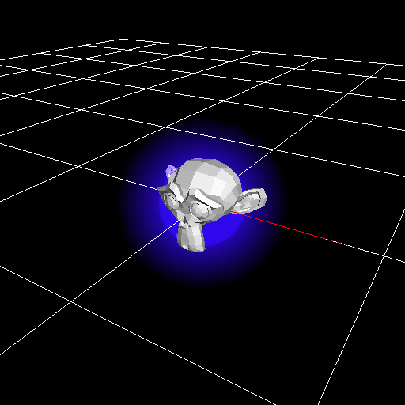
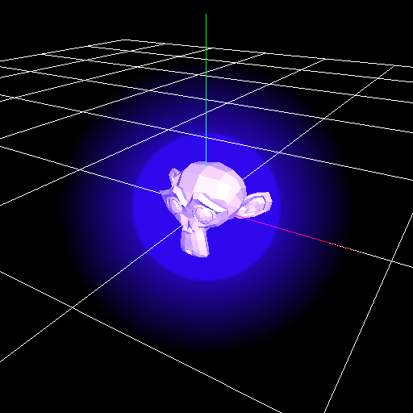
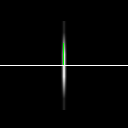

TIPS¶
目的ごとのパラメーター設定方法や知っていると便利な操作方法を説明しています。 チュートリアルに目を通した前提で説明しているので、先にチュートリアルを読むことを勧めます。 項目によっては他のページにリンクすることもあります。
パーティクルの寿命を無限にする。¶
エフェクトの種類によってはエフェクトを生成してからゲーム終了時まで、エフェクトが存在して欲しい場合があります。 それを実現するには複数の方法があります。 ただし、いずれの方法にしても、エフェクトを手動で停止しない限り、エフェクトが消えなくなるので注意してください。
寿命¶
寿命をゲームのプレイ時間より長くすると、ゲームが終わるまでパーティクルが残り続けます。
寿命により削除¶
共通ウインドウの「寿命により削除」のチェックを外すことです。
生成数¶
生成数を無限にすると、パーティクル１つ１つは消えたとしても、エフェクト全体は存在し続けます。
複数のパーティクルを0フレーム目に同時に生成する。¶
生成時間を0.0001といった非常に小さい値にします。 加えて、生成開始時間をマイナスにします。
生成時間を1より小さくすると、1フレームの間に複数のパーティクルが生成されます。 生成開始時間がマイナスの時間の場合、0フレームにパーティクルが生成されます。 この2つにより、0フレーム目に複数のパーティクルが生成されるようになります。
放射状にパーティクルを配置する¶
中央から外側の方向にパーティクルが移動するように放射状にパーティクルを配置します。
親子関係¶
親のパーティクルが360度方向にランダムに回転するように設定し、 子を中心から離れた位置に配置すると放射状にパーティクルが配置されます。
三日月型のパーティクルを生成する¶
完全な輪でなく、三日月型のパーティクルを生成します。

ゲーム中にエフェクトを再生するときにエフェクトがキャラクターにめり込まないようにする¶
|  |  |
ヒットエフェクトなど、キャラクターと同じ位置にエフェクトを配置することがあります。 エフェクトとキャラクターを同じ位置に配置するとキャラクターがエフェクトにめり込みます。 ゲームのプログラムでエフェクトの位置をずらせば、めり込まずに済みますが、この方法は面倒です。
Zオフセット¶
Zオフセットを指定すると、描画した時にエフェクトの位置を奥行き方向に移動します。 移動するとキャラクターにめり込まなくなります。
Zテスト¶
Zテストをオフにすると他のオブジェクトが存在していてもエフェクトが描画されるようになります。 ただ、手前にオブジェクトがあったとしても描画されるので障害物がある場合は注意が必要です。
剣の軌跡を生成する。¶

少し複雑なのでサンプルを用意しました。
剣の軌跡を生成するには、リボンを使用します。
軌跡と違ってリボンは生成された位置を維持します。
剣が通過した位置にリボンを配置すれば剣の軌跡のように見えます。
リボンは剣のノードの子のノードとして生成します。
剣はモデルで表現するのがいいですが、今回はスプライトの座標を変更して剣のような配置にしました。
描画パネルから、リボンの座標を変更して、リボンの左と右の距離が剣の長さと同じにします。
リボンの位置と角度を調節して、剣の先端と終端に一致するように配置します。
リボンなので、位置への影響、角度への影響、拡大への影響を、全て生成時のみに変更します。
後はリボンの色やフェードアウト等のパラメーターを調節します。
剣のパーティクルが移動すると剣の位置に合わせて軌跡が表示されることがわかります。
剣はFカーブで角度を変更して動かしました。
このTIPSではEffekseerで剣を動かしていますが、ゲーム中の剣に合わせてエフェクトをゲーム中で動かしても大丈夫です。
細長いパーティクルの画像について¶
細長いパーティクルに正方形の画像を設定した時に、パーティクルから離れたところから見ると表示がおかしくなることがあります。
これはミップマップにより、画像の解像度が低下して、端の画素と中央の画素が同じ位置を指すようになるためです。
これを防ぐためには、画像に細長い画像を使用します。
左が正方形の画像を使用したパーティクル、右が細長い画像を使用したパーティクルです。
|  |

|